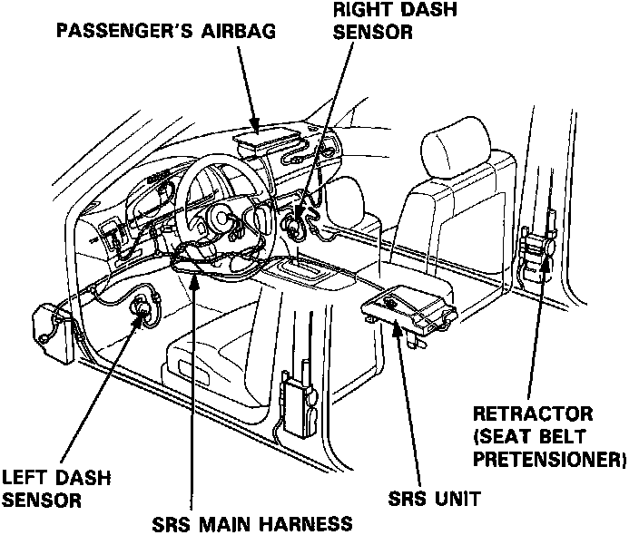
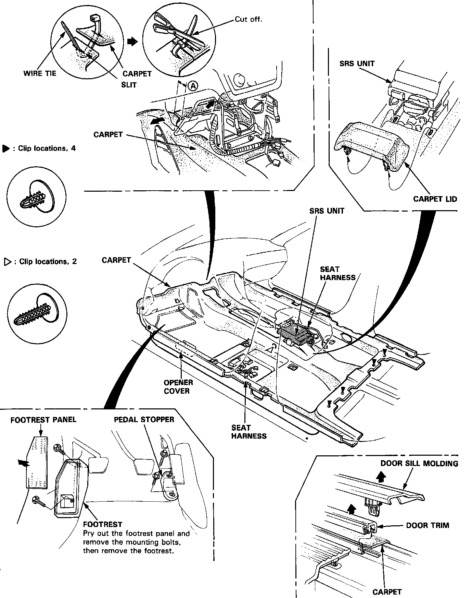

Carpet: Service and Repair
Carpet ReplacementCAUTION:
^ SRS wire harnesses are routed near the carpet.
^ All SRS wiring harnesses are covered with yellow outer insulation.
^ Before disconnecting any part of the SRS wire harness, install the short connectors.
^ Replace the entire affected SRS harness assembly if it has an open circuit or damaged wiring.

1. Remove:
^ Front seats
^ Rear seat-back and rear seat cushion
^ Center console panel
^ Center armrest
^ Stereo radio/cassette
^ Glove box lower panel
^ Glove box and left glove box cover
^ Dashboard lower cover
^ Center console
^ Opener cover
^ Front seat belt lower anchor bolt and anchor trim
^ Center pillar lower trim
^ Door sill moldings and door trims
^ Footrest and pedal stopper
^ Carpet lid
NOTE: The L and LS model radios may have a coded theft protection circuit.
Be sure to get the customer's code number before:
- Disconnecting the battery.
- Removing the No.56 (7.5 A) fuse in the under-hood fuse/relay box.
- Removing the radio.
After service, reconnect, power to the radio and turn it on.
When the word "CODE" is displayed, enter the customer's 5-digit code to restore radio operation.
2. Pry out the clips at the rear edge and bottom of the center armrest.
3. Cut the area first, then pull back the carpet as shown.
4. Remove the carpet by sliding it rearward.

5. Installation is the reverse of the removal procedure.
NOTE:
^ Take care not to damage, wrinkle or twist the carpet.
^ Reattach the cut area with wire tie as shown.
^ Make sure the seat harnesses are routed correctly.